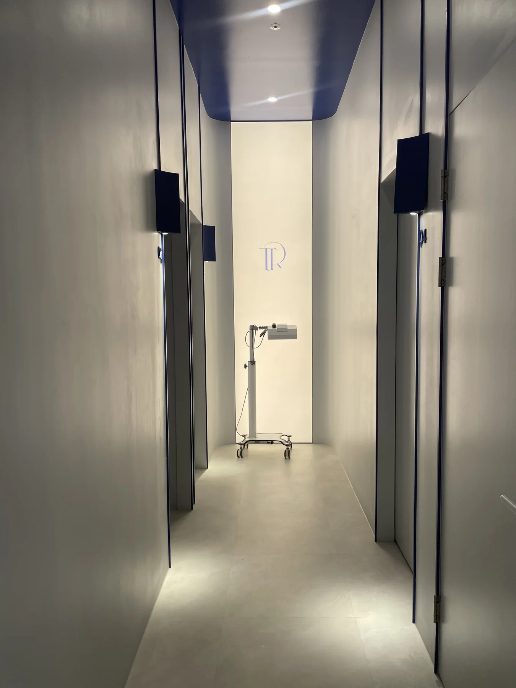
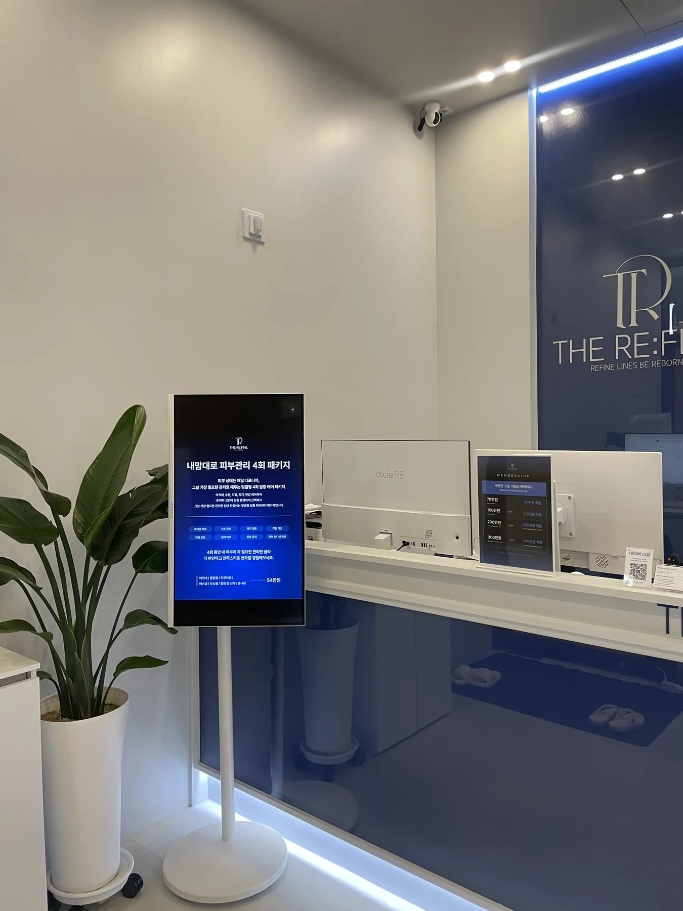
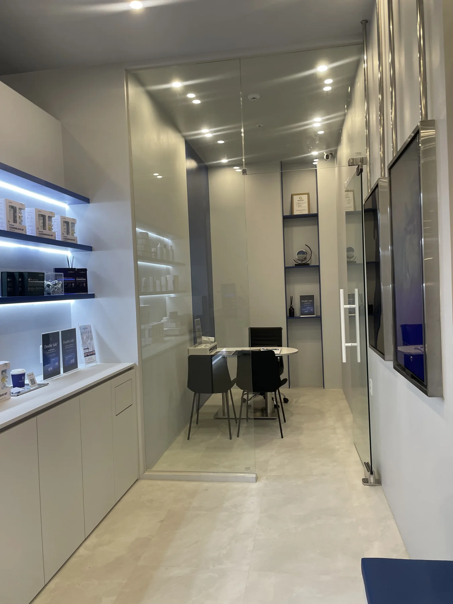
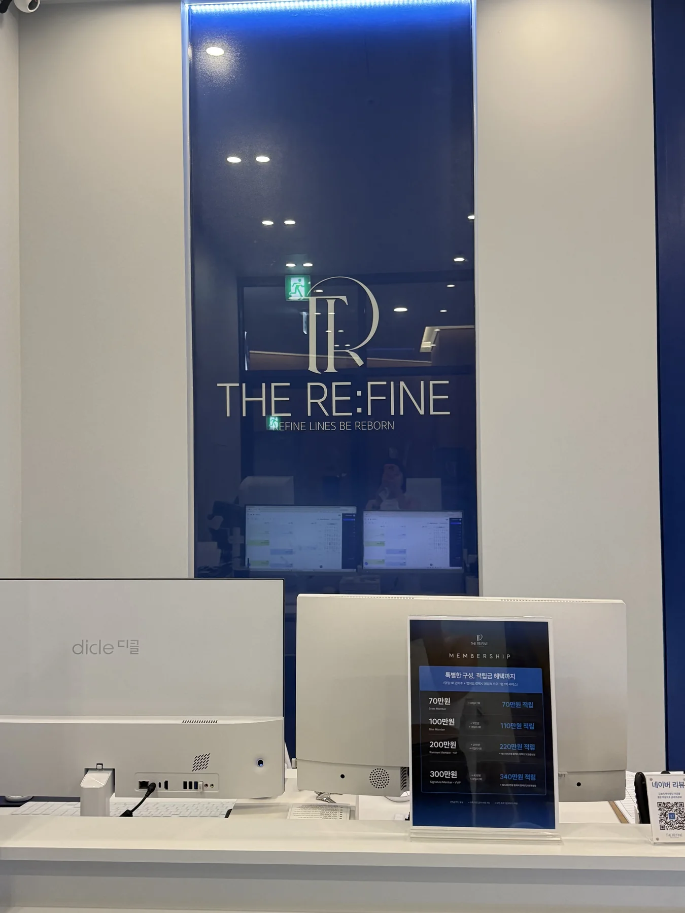
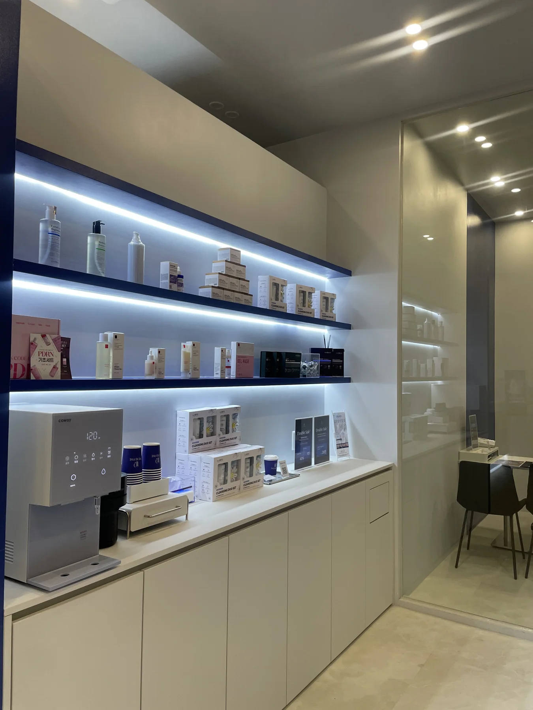
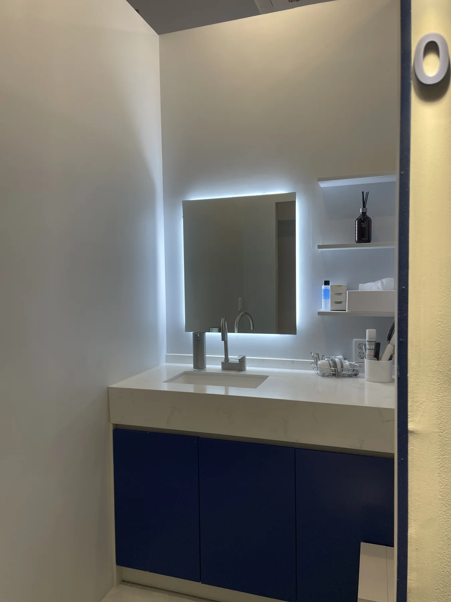

1:1 퍼스널 분석
피부 타입만 보지 않습니다. 얼굴 골격과 근육의 방향, 현재 피부 컨디션을 함께 살피며 출발점을 정합니다.
청주 가경동 피부관리 · 얼굴경락 · 윤곽관리 · 스킨케어 · 데콜테
피부 컨디션과 얼굴 골격, 근육의 흐름을 함께 읽고 한 사람만을 위한 관리 시퀀스를 설계합니다.



STANDARD CARE IS NOT OUR STANDARD.
더리파인은 피부 컨디션, 얼굴 골격, 근육 양상을 세밀하게 분석해 필요한 순서를 다시 조합합니다. 모두에게 같은 코스를 권하기보다, 지금의 얼굴과 피부에 맞는 가장 자연스러운 방향을 찾습니다.
브랜드 철학 자세히 보기 ↗프로그램 이름보다 현재 컨디션을 먼저 봅니다. 각 케어는 상담 후 피부와 얼굴선의 상태에 맞춰 조합됩니다.
피부 타입만 보지 않습니다. 얼굴 골격과 근육의 방향, 현재 피부 컨디션을 함께 살피며 출발점을 정합니다.
피부 맞춤형 앰플 레이어링과 기기 케어를 먼저 배치하고, 가장 이상적인 컨디션에서 윤곽 관리가 이어지도록 구성합니다.
고요한 공간에서 한 사람의 변화에만 집중합니다. 과한 자극보다 균형과 지속 가능한 피부 컨디션을 우선합니다.

도합 22년 경력의 스킨테라피 디자이너가 근막의 흐름과 개인별 얼굴형을 고려해 관리 방향을 정교하게 설계합니다.
프로그램 보기 ↗
